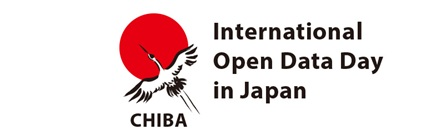
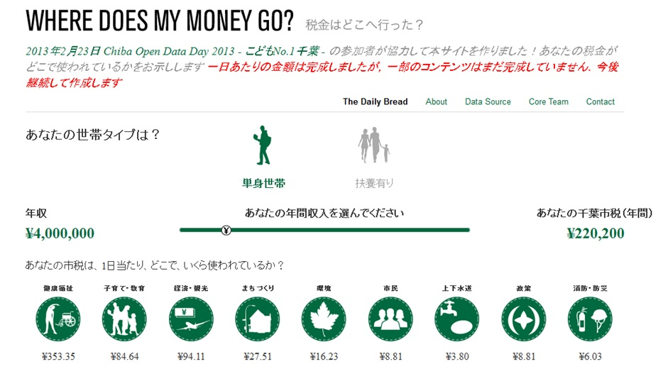
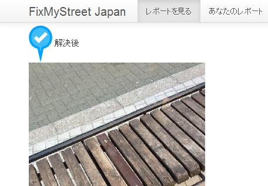

技術コラム第17回：Chiba Open Data Day 2013 - こどもNo.1千葉 - 参加レポート
2013年2月23日に開催されたChiba Open Data Day 2013 - こどもNo.1千葉 -に参加しました。
世界で100都市以上で同日に開催され、日本でも8都市で開催されたInternational Open Data Dayの千葉市でのイベントです。イベント名にもあるように千葉市が力を入れているこども・子育て支援を意識したイベントでした。LODチャレンジ実行委員会も後援させていただきました。
千葉市では開催案内に記載の通り、
- Where Does My Money Go?によるお金の使い方分析
- イクメン応援アプリのアイデア出し＆プロトタイピング
- FixMyStreetを使ったこどもNo.1度チェック
という３つのチームによるプロジェクトが進行しました。
それぞれの成果については既に International Open Data Day 全体のコーディネートを行った Open Knowledge Foundation Japan の特設サイトに掲載されています。
またYouTubeにもオープニングレクチャや成果発表の様子があります。

詳細は上記リンク先を参照していただくとして、ここでは一参加者として、作業内容や感想を書きたいと思います。
開催前から千葉市には熱気がありました。facebook上で熱い議論が重ねられ、事前の準備が進められていました。地域の問題を登録・共有するFixMyStreetについては、プレイベントの街歩きが行われていました。
私が参加したWHERE DOES MY MONEY GO? 千葉市版プロジェクトも、事前に市の予算や決算の資料が調査されていました。また、今回の作業で扱い易いようにデータが加工されていました。これには本当に助かりました。今後、自治体からは、扱い易い状態でデータが公開されてくることが期待されていますが、現時点で今回のような短期間のハッカソンで成果を出すには、この事前作業は非常に重要です。
そして当日は、千葉市版チームメンバにより、データを読み解きながら、公会計のプロも参加した建設的な議論を経て、千葉市ならではの決算分類が考えられていきました。ここでの分類はWHERE DOES MY MONEY GO?のユーザーインタフェース上で、どの分類にどれだけお金が使われているかという表示に直結します。本作業のベースとして利用した横浜市版の WHERE DOES MY MONEY GO?から分類を変えなければならない部分が多々あり、市税の使い方は自治体毎の特色があるということがよくわかりました。分類作業をすると市への理解が深まり、このようなイベントに市民が参加する意味は大きいとあらためて思いました。自治体と市民の協調のベースになります。

分類ができると、当日の成果物の作成に向けてラストスパート開始です。分類に基づいて、市の各事業をマッピングし、分類毎に事業費の市費総額を計算したり、今回決定した分類を表示できるようにWebサイトの内容を変える作業を並行・分担して実施していきます。また成果を発表するためのスライドやブログ掲載の原稿なども協力して作り上げていきます。と、ここで、千葉市版のオリジナルな決算分類を表示するのに相応しいアイコンがないことが問題に。しかし、なんとチームにアイコンをデザインできるメンバがおり、急遽、千葉市用のアイコンまでできてしまいました。チームひとりひとりの献身的な作業とチームワークにより、短時間で大きな成果を得ることができ、充実感を味わうことができました。
作業の結果構築されたWHERE DOES MY MONEY GO? 千葉市版は、市税が1日当たり、どこでいくら使われているか？について、かなりしっかりしたデータに基づいた情報を提示できるサイトになりました。まだ、解説や成果資料などがサイトに掲載できていなかったり、議論で話し合われた課題について反映できていなかったりするものが多々あり、今後少しずつでも継続して作業を実施したいと考えています。

WHERE DOES MY MONEY GO? ついてばかり書いてしまったのですが、他のチームに関して少し触れておきたいのが、FixMyStreet Japanを利用したプレイベントで、少し壊れていて子どもに危ないとされていたベンチです。なんとオープンデータデーの当日までに補修がされていました。市民が自治体とこうしたツールを用いて協調できると本当にうれしいですね。単純な指摘だけでなく、解決に向けた連携、協調、そしてありがとうという気持ちが大事です。
当日の懇親会の後、同ベンチをイベントの参加者で訪れました。普通のしかし補修された夜のベンチを取り囲み写真を取っている参加者の一団は、その場を通りがかった千葉市民の目にどのように映ったでしょうか？このベンチは千葉市のオープンガバメントの歴史的なモニュメントとなるかもしれません！？
Chiba Open Data Day 2013は、この他にも熊谷市長が各チームの議論に加わったり、メディアの取材があったり、プロフェッショナルな機材での映像配信があったりと、本当に充実したイベントでした。参加者の皆様、実行委員会の皆様、お疲れ様でした。
NTTレゾナント株式会社／LODチャレンジ実行委員会委員 佐藤宏之